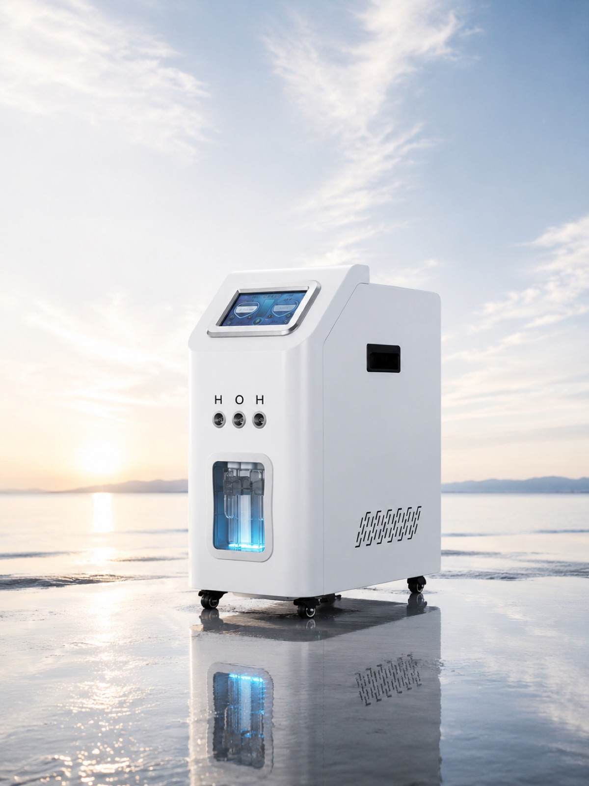
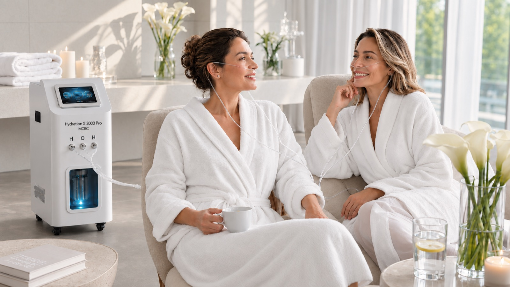
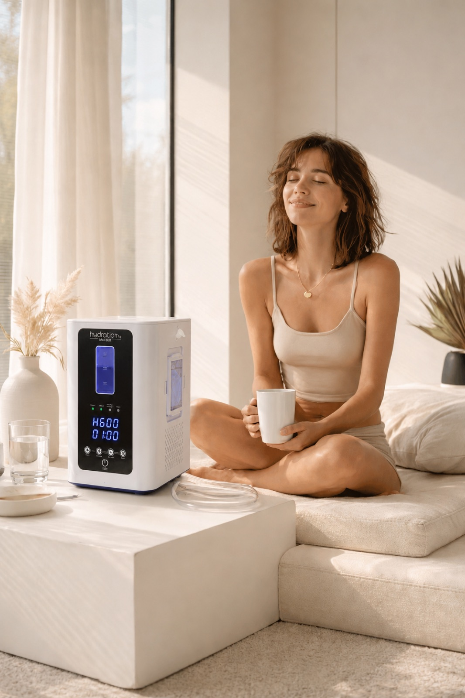
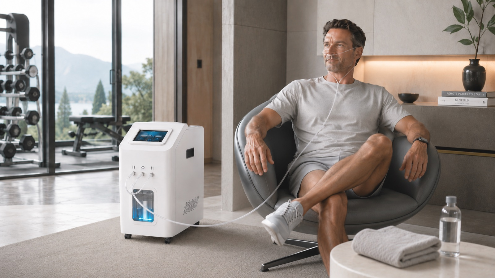
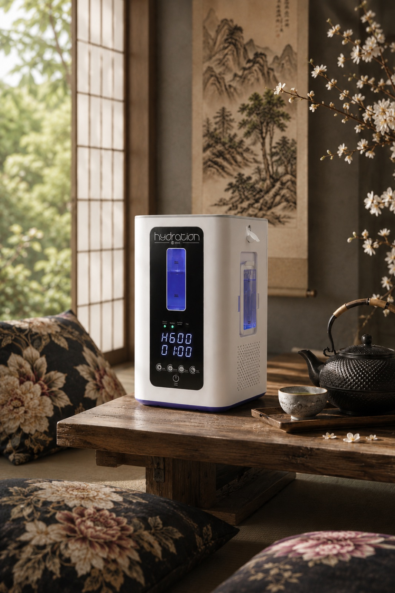
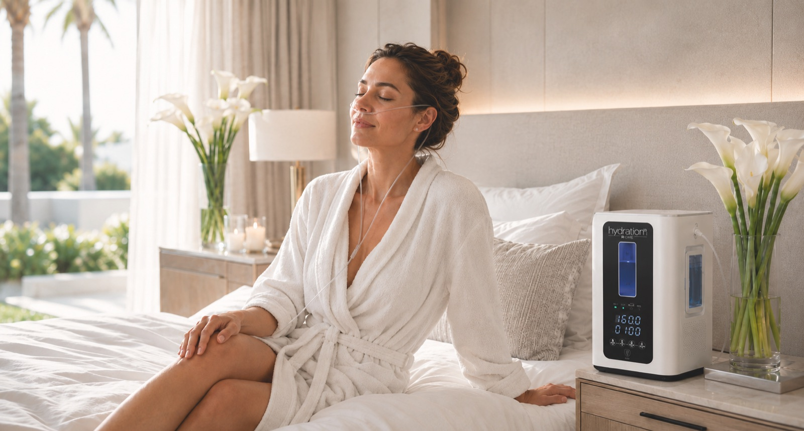
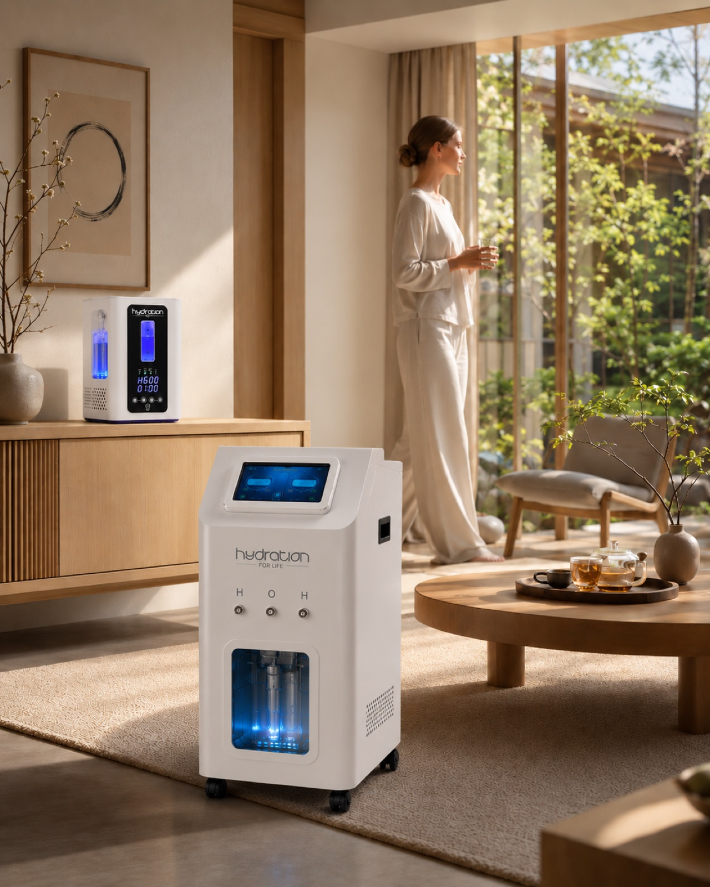
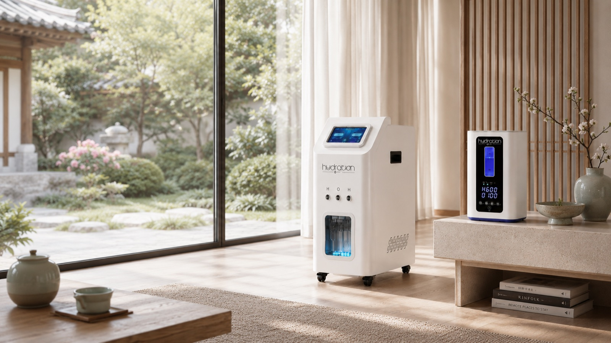
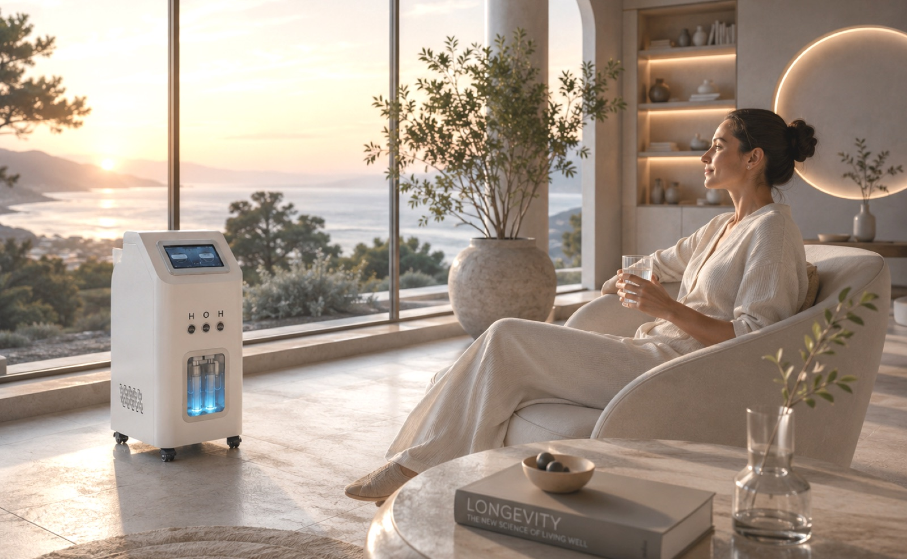

Hydration‑H2
Almost nothing to do. So much happening.
- High-output H₂ technology
- 99.99% pure hydrogen
- 2–4% inhalation concentration, the level used in research
- Works upstream
- Fits into the spaces and treatments menu you already have

Inhale
love
Every breath you take carries the smallest molecule in the universe into your body.
Invisible, silent and on its way to every cell, where it seeks out the most aggressive free radicals and turns them into something beautiful: water.
Every session is a small act of proactive self-care with love for your future self, and over the weeks, your body feels it.
No
barriers
Colourless, odourless and the smallest molecule there is, hydrogen passes from the lungs into the bloodstream within seconds. And it goes further: into tissues and organs, across the protective barrier of the brain, through every cell membrane, all the way to where the cell makes its energy and keeps its DNA.
What makes it remarkable is its precision: it calms the most aggressive free radicals and leaves the useful ones to do their work.(1) Every Hydration-H2 session brings the body a molecule that helps it keep oxidative stress in balance.
Create your own longevity water: a glass a day, fresh and delicious, with breakfast, before training or at the desk. And over time, research shows:
After 4 weeks: calmer inflammation and immune cells shifting in a favourable direction.(2) After 6 months: better markers of metabolism and inflammation,(3) and even longer telomeres, the protective caps on our DNA.(4)
The hydrogen water rod is included with the Hydration S 900 Plus and available as an extra accessory for the Hydration S 3000 Pro.
Small molecule,
big science
Molecular hydrogen is one of the most researched molecules in wellness today.
On hydrogen in medicine, more every year since 2007.(1)
From the first study in Science in 1975(2) to the breakthrough in Nature Medicine in 2007,(3) and every year since.
The most researched part of the body, more than the heart, lungs or skin.(1)
And beyond: 410+ on the heart, 270+ on digestion, 200+ on the lungs, 70+ on the skin and 70 on hormones.(1)
(1) PubMed search, October 2026 · (2) Dole M et al., Science, 1975 · (3) Ohsawa I et al., Nature Medicine, 2007
Trust
MCRC
Speak to a specialist ↗︎MCRC AG, Zürich: Swiss standards in selection, service and responsibility.
Every technology meets European and international safety standards and holds EU product safety certification.
Every technology we offer runs daily, in our own venues and with operators worldwide.
Your daily
ritual
Your favourite chair, a soft blanket, a cup of tea. That is the whole preparation.
One press, and the air you breathe becomes something more.
30 minutes for everyday balance, 60 minutes for deep work. Your body will thank you for either.
The magic is in the rhythm: a little every day does more than a lot once in a while.
Consistency is the secret: 30 minutes for everyday balance, 60 minutes for deep work, ideally every day. What you notice comes with rhythm, over weeks of regular sessions. In combined protocols, a shorter hydrogen block becomes the calm breath between cold, light and oxygen.
Choose your
everyday H₂
Your personal Hydration-H2 system, compact enough to live beside your desk or your bed.
Made for one, with optional goggles and earphones, and the hydrogen water rod for your daily glass.
3 times the output, adjustable flow and room for two: a couple, a parent and child, or two guests side by side.
On wheels, it moves with you from treatment room to lounge to private spa.
Into the space
you have
30 minutes a day does more than 1 long session a week: with the morning coffee, or together in front of the TV.
The therapist's hands care for the outside, hydrogen for the inside. After a long flight it leaves guests less tired; before the 4 pm meeting it sharpens focus.
30 gentle minutes in a favourite armchair. In a small study, women over 65 remembered more words after 4 weeks.(1)
Better
together
The easiest companion in any protocol: before, after or at the same time.
- Red light
- Cryotherapy
- HBOT
- Compression
- IV & longevity programmes
- Sport & travel









In
detail
- Technology
- Freshly prepared high purity molecular hydrogen
- Hydrogen output
- 600 to 2,000 ml/min, depending on the system
- Gas mix
- Pure H₂, or 2 parts hydrogen to 1 part oxygen
- Guests
- 1, or 2 at once with the Hydration S 3000 Pro
- Application
- Nasal cannula as standard; goggles and earphones as extra accessories
- Hydrogen water
- Yes, with the hydrogen water rod for fresh longevity water
- Session
- 30 to 60 minutes, automatic timer
- Position
- Relaxed, seated or reclined, hands free
- Safety monitoring
- Overheating, water level, water quality, overload
- Water
- Distilled only, refreshed every 10 to 14 days
- Room
- Indoors, well ventilated, 15 to 35 °C, no open flame nearby
- Installation
- Plugs into a grounded socket, no plumbing
- Power
- 110 to 240 V, under 200 to 700 W
- Certification
- Swiss registered, CE certified
- Warranty
- 2 years for private customers, 1 year for business
Inspired
by Japan
Modern hydrogen research began in Japan in 2007, and by 2015 the country had named it the Year of Hydrogen. Japan has a gift for turning everyday moments into rituals: the slow pour of tea, the hush of an onsen, a morning walk beneath the cedars. Hydrogen found its place among them, in beauty salons, wellness clinics and on the shelves beside the tea.
In Europe, this ritual is only arriving. Bring it into your space in the spirit of a tea house: a soft chair, low light, something warm in the guest's hands, and 30 minutes they will want to repeat. A ritual with centuries of calm behind it and the newest science inside.
- A Japanese-inspired hydrogen inhalation ritual for spas, hotels and longevity centres
- 2 guests per session, very little staff time
- Bookable session, package or membership benefit
- Personal accessories for targeted care: goggles for the eyes, earphones for the ears
- A home system to recommend: Hydration S 900 Plus
Beautifully
simple
What is hydrogen inhalation?
Hydrogen inhalation means breathing in molecular hydrogen through a soft nasal cannula while you relax. Hydration-H2 prepares it fresh, so every breath carries the smallest molecule in the universe to where your body needs it.
Is hydrogen inhalation safe?
In human studies, hydrogen inhalation is well tolerated, and most of what the body doesn't use leaves with your next breath out. You breathe a gentle mix of about 2 to 4% hydrogen, the level used in research. Enjoy it in a well-ventilated room, with no smoking or open flame nearby and away from heaters, ovens and microwaves. Hydration-H2 systems watch over every session for temperature, water level, water quality and overload.
What are the benefits of hydrogen inhalation?
Research links hydrogen to balanced oxidative stress, calmer inflammation and better recovery, with more than 2,000 publications since 2007. Over the weeks, many describe it as feeling lighter and clearer.
Will I feel anything during a session?
A calm half hour, and that is all. Hydrogen works quietly; what you notice comes with rhythm, over weeks of regular sessions.
How long and how often should you inhale hydrogen?
30 minutes for everyday balance, 60 minutes for deep work. A little every day does more than a long session once a week.
Hydrogen inhalation or hydrogen water: which is better?
Both, and they complement each other. Breathing brings hydrogen into the bloodstream within seconds; a daily glass of longevity water keeps it part of your day.
Can I use hydrogen inhalation at home?
Yes. The Hydration S 900 Plus is made for home: it needs a grounded socket, a well-ventilated room and distilled water, refreshed every 10 to 14 days.
Can I offer hydrogen inhalation in my spa, hotel or clinic?
Yes. The Hydration S 3000 Pro serves 2 guests at once and fits beside red light, cold, oxygen or compression, as a standalone session, a protocol step or a membership benefit.
Full operating, safety and maintenance instructions are in the user manual.
Hydration-H2 is positioned for wellness and proactive self-care and makes no medical claims.
Always
support you
Before and after the sale, our team answers whatever you and your guests need to know.
Your team learns to use it, explain it and recommend it.
Models, pricing and integration, personally.
Bring hydrogen
into everyday life.
Models, pricing, and integration into your space: we'll take you through it personally.